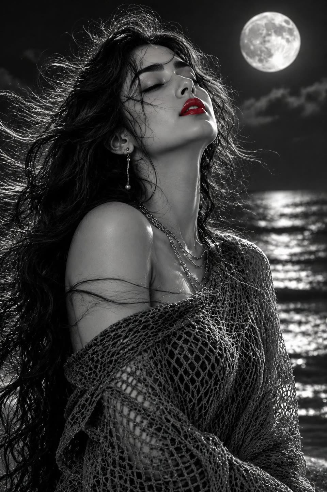

Selective colour noir portrait: black-and-white moonlit sea with crimson lips as the only colour
GRN-098Grain / Filterunknownby @Tanvir489922026-11-23

A selective-colour recipe: high-contrast monochrome with film grain, moonlight rim on hair and shoulder, and one colour accent ("deep glossy crimson-burgundy, the only splash of color"). Works for lipstick, jewellery or fragrance key visuals.
Prompt
Hyper-realistic selective color portrait of a woman with long, wild, wavy black hair blowing in the wind, her head tilted slightly back with eyes gently closed in a serene, sensual, dreamy expression. Her lips are painted a deep glossy crimson-burgundy, the only splash of color in an otherwise black-and-white image. She wears delicate layered silver chain necklaces, a single thin drop earring, and an off-shoulder loose-knit fishnet-style sweater slipping down one shoulder. Behind her, a calm night ocean with shimmering reflections and a large, softly glowing full moon in the upper right, with hazy clouds in the dark sky. Strands of windblown hair catch the moonlight and glow like silver threads. Romantic, moody, mysterious, elegant, cinematic atmosphere. Lighting and camera: Soft moonlight rim lighting along the hair, cheek, and shoulder, gentle diffused fill on the face, deep shadows and rich blacks, high-contrast monochrome with fine skin texture and film grain. Shot on an 85mm lens, f/1.8, shallow depth of field, ocean and moon softly blurred with creamy bokeh highlights on the water, sharp focus on the lips and face, dramatic chiaroscuro, 8K, ultra-detailed, photorealistic. Style keywords: selective color, noir, black and white fine art portrait, red lips accent, moonlit, romantic, ethereal, cinematic, editorial, glamour, sultry, atmospheric.
Tags: selective color, black and white, film grain, noir, moonlight rim, red lips accent, beauty